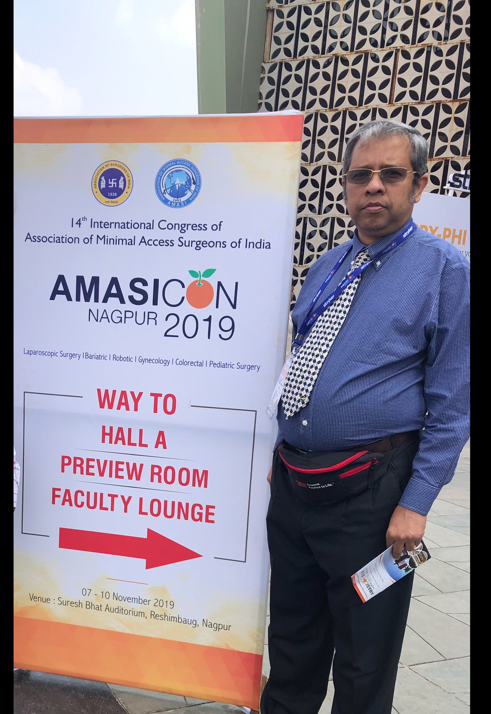
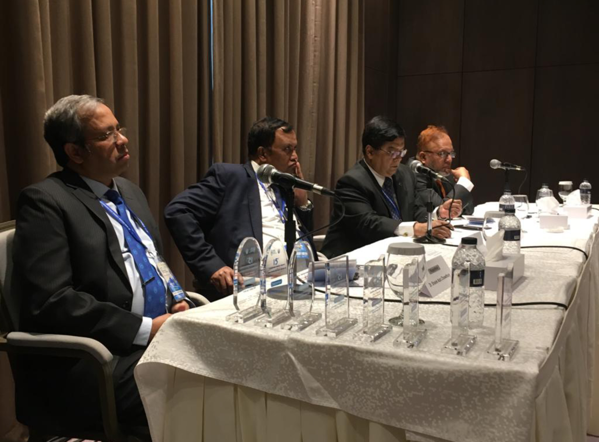

Photos

With Professor Davide Lomanto during attending an International workshop on ‘Advanced Digestive Surgery’ in National University of Health System (NUHS), Singapore
Group of surgeons from different countries in National University Health System (NUHS), Singapore
Attending 46th World Congress of Surgery at Bangkok, Thailand in 2015
Attending Amasicon 2015 at Mumbai, India in 2015
Attending 8th Biennial Congress of ASEAN Society of Colorectal Surgeons in Bali, Indonesia at 2016
Receiving certificate of attendance in GROS 2012 conference in Pune, India
Receiving FMAS certificate in AMASICON 2016 In Kolkata

Attending ‘Recent Advances in Colorectal Surgery‘ in Cairo, Egypt at 2017
Receiving certificate for attending ‘Laparoscopic Hernia Course’ organised by ILS Hospitals, Salt Lake, Kolkata which was led by Dr. Om Tantia & Dr. Tomonas Chaudhuri at 2017
Attending ACRSICON 2017 in Coimbatore, India
Presenting his Paper at Milon Hall, BSMMU in a conference organised by SLSB

With his mentor, Prof Motiur Rahman, under whom he achieved training for 2 years in BIRDEM Hospital, Dhaka
Inaugural Session of Training Course & Live Workshop on ‘Laparoscopic Hernia Surgery’ organised by Collaboration of SLSB, SOMCH & GEM hospital, Coimbatore, India where Indian surgeons like ‘Dr. R Parthasarathi’ & ‘Dr. Siddartha Bhattacharya’ were present

Receiving crest for presenting his paper in 9th International Congress organised by SLSB at The Palace Luxury Resort
With panel of Surgeons in 9th International Congress organised by SLSB at The Palace Luxury Resort
Receiving crest from Prof Feroze Quader for presenting his paper in Surgical Congress & Live workshop at Rajshahi Medical College

Attending AMASICON 2019 in Nagpur, India
Presenting his paper in ‘15th International Surgical Congress’ organised by SOSB at Hotel Intercontinental, Dhaka

As a Rapporteur in ‘ 15th International Surgical Congress’ organised by SOSB in Hotel Intercontinental, Dhaka
Attending the 2nd International Conference ABSBCON 2020
With group of Surgeons in Laparoscopic Colorectal training program in Fortis Hospital, Mumbai
Laparoscopic Colorectal training program in Fortis Hospital, Mumbai.
Performing Percutaneous Endoscopic Gastrostomy (PEG)
Picnic at Grand Sultan Hotel
Picnic at Grand Sultan Hotel
Picnic at Grand Sultan Hotel
Picnic at Grand Sultan Hotel